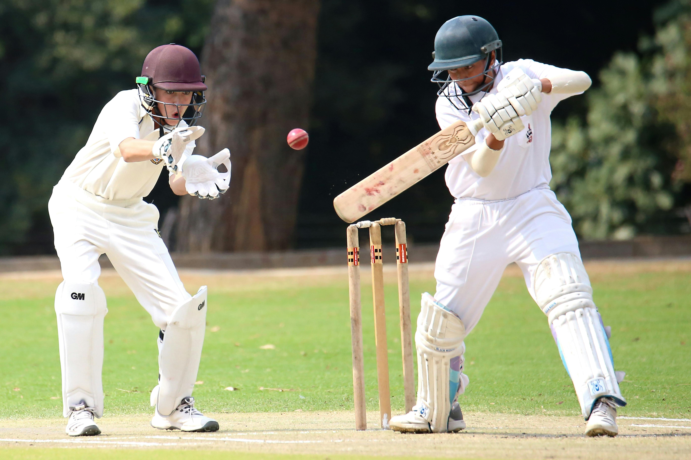

My Hobbies and Interests
I actively participate in various extracurricular activities that help me develop creativity, discipline, and technical skills beyond academics.
Hobbies & Interests
- Listening to music
- Playing sports
- Coding and problem solving
- Watching movies
- Traveling
Skill-Based Hobbies
Some of my hobbies require skill development and regular practice. These activities help improve focus, teamwork, and technical abilities.
Music
I enjoy listening to music to relax and stay motivated.
Sports
Playing outdoor sports helps me stay physically fit and active.
